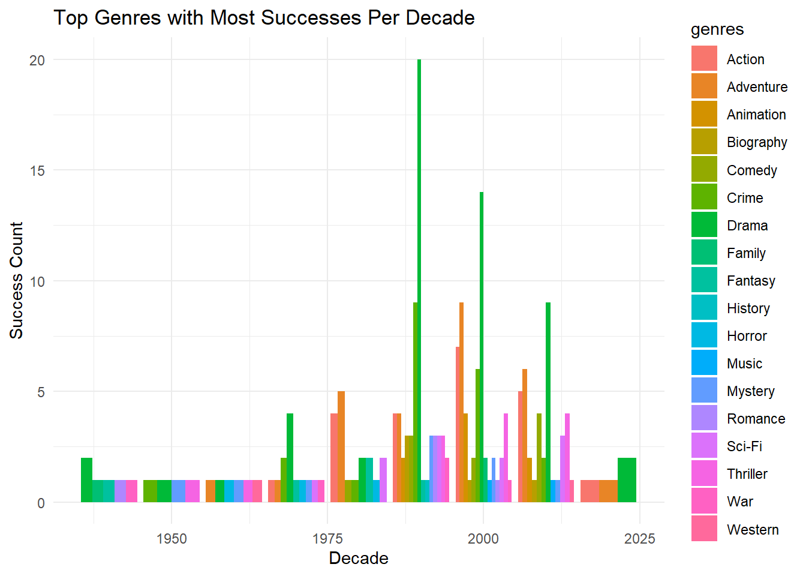
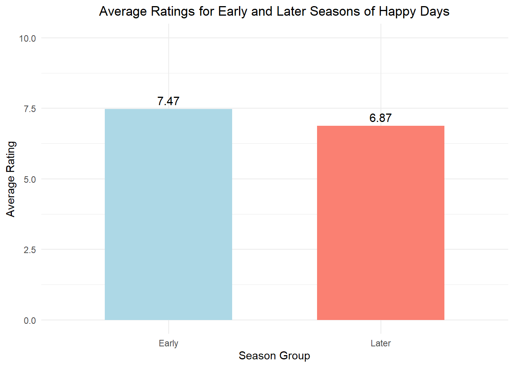

── Conflicts ────────────────────────────────────────── tidyverse_conflicts() ──
✖ dplyr::filter() masks stats::filter()
✖ dplyr::lag() masks stats::lag()
ℹ Use the conflicted package (<http://conflicted.r-lib.org/>) to force all conflicts to become errors
library (tidyverse)get_imdb_file <-function(fname, path){ fname_ext <-file.path(path, paste0(fname, "_small.csv"))as.data.frame(readr::read_csv(fname_ext, lazy=FALSE))}# Example usage: specify the path where your CSV files are storedpath <-"C:\\Users\\w3038\\Downloads\\STA 9750"NAME_BASICS <-get_imdb_file("name_basics", path)
Rows: 2460608 Columns: 6
── Column specification ────────────────────────────────────────────────────────
Delimiter: ","
chr (6): nconst, primaryName, birthYear, deathYear, primaryProfession, known...
ℹ Use `spec()` to retrieve the full column specification for this data.
ℹ Specify the column types or set `show_col_types = FALSE` to quiet this message.
Warning: One or more parsing issues, call `problems()` on your data frame for details,
e.g.:
dat <- vroom(...)
problems(dat)
Rows: 372198 Columns: 9
── Column specification ────────────────────────────────────────────────────────
Delimiter: ","
chr (7): tconst, titleType, primaryTitle, originalTitle, endYear, runtimeMin...
dbl (2): isAdult, startYear
ℹ Use `spec()` to retrieve the full column specification for this data.
ℹ Specify the column types or set `show_col_types = FALSE` to quiet this message.
TITLE_CREW <-get_imdb_file("title_crew", path)
Rows: 371902 Columns: 3
── Column specification ────────────────────────────────────────────────────────
Delimiter: ","
chr (3): tconst, directors, writers
ℹ Use `spec()` to retrieve the full column specification for this data.
ℹ Specify the column types or set `show_col_types = FALSE` to quiet this message.
Rows: 3007178 Columns: 4
── Column specification ────────────────────────────────────────────────────────
Delimiter: ","
chr (4): tconst, parentTconst, seasonNumber, episodeNumber
ℹ Use `spec()` to retrieve the full column specification for this data.
ℹ Specify the column types or set `show_col_types = FALSE` to quiet this message.
Rows: 6586689 Columns: 6
── Column specification ────────────────────────────────────────────────────────
Delimiter: ","
chr (5): tconst, nconst, category, job, characters
dbl (1): ordering
ℹ Use `spec()` to retrieve the full column specification for this data.
ℹ Specify the column types or set `show_col_types = FALSE` to quiet this message.
Rows: 372198 Columns: 3
── Column specification ────────────────────────────────────────────────────────
Delimiter: ","
chr (1): tconst
dbl (2): averageRating, numVotes
ℹ Use `spec()` to retrieve the full column specification for this data.
ℹ Specify the column types or set `show_col_types = FALSE` to quiet this message.
Warning: There were 2 warnings in `mutate()`.
The first warning was:
ℹ In argument: `seasonNumber = as.numeric(seasonNumber)`.
Caused by warning:
! NAs introduced by coercion
ℹ Run `dplyr::last_dplyr_warnings()` to see the 1 remaining warning.
#Task2.1 How many movies are in our data set? How many TV series? How many TV episodes?num_movies <- TITLE_BASICS |>filter(titleType =="movie") |>count()num_tv_series <- TITLE_BASICS |>filter(titleType =="tvSeries") |>count()num_tv_episodes <- TITLE_BASICS |>filter(titleType =="tvEpisode") |>count()cat("Movie total:", num_movies$n, "\n")
#Task2.2 Who is the oldest living person in our data set?oldest_living_person <- NAME_BASICS |>filter(is.na(deathYear)) |>arrange(birthYear) |>slice(1)# Print the details of the oldest living personcat("The oldest living person in the dataset is:", oldest_living_person$primaryName, "born in", oldest_living_person$birthYear, "\n")
The oldest living person in the dataset is: Robert De Visée born in 1655
#Task2.3There is one TV Episode in this data set with a perfect 10/10 rating and 200,000 IMDb ratings. What is it? What series does it belong to?perfect_episode <- TITLE_RATINGS |>filter(averageRating ==10, numVotes ==200000) |>left_join(TITLE_BASICS, by ="tconst") |>select(primaryTitle, titleType, genres)# Step 2: Print the results in a table formatperfect_episode |>gt()
primaryTitle
titleType
genres
#Task2.4What four projects is the actor Mark Hammill most known for?# Find Mark Hamill's nconstmark_hamill <- NAME_BASICS |>filter(primaryName =="Mark Hamill")# Check if Mark Hamill was foundif(nrow(mark_hamill) >0) { mark_hamill_nconst <- mark_hamill$nconst# Get the projects Mark Hamill is known for known_projects <- TITLE_PRINCIPALS |>filter(nconst == mark_hamill_nconst) |>inner_join(TITLE_BASICS, by ="tconst") |>select(primaryTitle, titleType) |>arrange(desc(titleType)) |># Sort by titleTypeslice(1:4) # Get the top 4 projects# Print the projectscat("Mark Hamill is most known for the following projects:\n")print(known_projects)} else {cat("Mark Hamill not found in the dataset.\n")}
Mark Hamill is most known for the following projects:
primaryTitle titleType
1 Gabriel Knight: Sins of the Fathers videoGame
2 Gabriel Knight: Sins of the Fathers videoGame
3 Wing Commander III: Heart of the Tiger videoGame
4 Wing Commander IV: The Price of Freedom videoGame
#Task#2.5 What TV series, with more than 12 episodes, has the highest average rating?# Step 1: Count the number of episodes for each seriesepisode_counts <- TITLE_EPISODES |>group_by(parentTconst) |>summarise(episode_count =n(), .groups ='drop')# Step 2: Join episode counts with Title Ratings# We need to join with TITLE_BASICS to get the title name and ensure we're working with TV seriesaverage_ratings <- episode_counts |>inner_join(TITLE_RATINGS, by =c("parentTconst"="tconst")) |>inner_join(TITLE_BASICS, by =c("parentTconst"="tconst")) |>filter(titleType =="tvSeries") |>select(seriesTitle = primaryTitle, episode_count, averageRating)# Step 3: Filter for series with more than 12 episodesfiltered_series <- average_ratings |>filter(episode_count >12)# Step 4: Find the series with the highest average ratingtop_series <- filtered_series |>arrange(desc(averageRating)) |>slice(1)# Print the resultif (nrow(top_series) >0) {cat("The TV series with more than 12 episodes and the highest average rating is:\n")print(top_series)} else {cat("No TV series found with more than 12 episodes.\n")}
The TV series with more than 12 episodes and the highest average rating is:
# A tibble: 1 × 3
seriesTitle episode_count averageRating
<chr> <int> <dbl>
1 Craft Games 318 9.7
#Task2.6 Is it true that episodes from later seasons of Happy Days have lower average ratings than the early seasons?# Step 1: Get tconst for Happy Dayshappy_days_tconst <- TITLE_BASICS |>filter(primaryTitle =="Happy Days") |>select(tconst)# Step 2: Filter episodes for Happy Days and get their ratingshappy_days_episodes <- TITLE_EPISODES |>filter(parentTconst %in% happy_days_tconst$tconst) |>inner_join(TITLE_RATINGS, by ="tconst") |>mutate(seasonNumber =as.integer(seasonNumber))# Step 3: Classify seasons into early and later# Let's assume seasons 1-5 are early, and seasons 6-11 are later for this examplehappy_days_episodes <- happy_days_episodes |>mutate(season_group =ifelse(seasonNumber <=5, "Early", "Later"))# Step 4: Calculate average ratings for early and later seasonsaverage_ratings <- happy_days_episodes |>group_by(season_group) |>summarise(average_rating =mean(averageRating, na.rm =TRUE), .groups ='drop')# Step 5: Print the resultsprint(average_ratings)
# A tibble: 2 × 2
season_group average_rating
<chr> <dbl>
1 Early 7.47
2 Later 6.87
# Step 6: Check if later seasons have lower average ratingsif (nrow(average_ratings) ==2) {if (average_ratings$average_rating[average_ratings$season_group =="Later"] < average_ratings$average_rating[average_ratings$season_group =="Early"]) {cat("True: Later seasons of Happy Days have lower average ratings than early seasons.\n") } else {cat("False: Later seasons of Happy Days do not have lower average ratings than early seasons.\n") }} else {cat("Error: Unable to determine average ratings for early and later seasons.\n")}
True: Later seasons of Happy Days have lower average ratings than early seasons.
# Define the success score as a new metric using mutateTITLE_RATINGS <- TITLE_RATINGS %>%mutate(successScore = (0.7* averageRating) + (0.3*log(numVotes)))# Question 1: Choose the top 5-10 movies based on the success metrictop_successful_movies <- TITLE_RATINGS %>%inner_join(TITLE_BASICS, by ="tconst") %>%filter(titleType =="movie") %>%arrange(desc(successScore)) %>%select(primaryTitle, averageRating, numVotes, successScore, startYear) %>%head(10)# Display the top successful movies using gttop_successful_movies %>%gt() %>%tab_header(title ="Top 10 Successful Movies (Based on Success Score)" )
Top 10 Successful Movies (Based on Success Score)
primaryTitle
averageRating
numVotes
successScore
startYear
The Shawshank Redemption
9.3
2942823
10.97846
1994
The Godfather
9.2
2051186
10.80018
1972
The Dark Knight
9.0
2922922
10.76643
2008
The Lord of the Rings: The Return of the King
9.0
2013824
10.65466
2003
Pulp Fiction
8.9
2260017
10.61926
1994
Inception
8.8
2595555
10.59079
2010
The Lord of the Rings: The Fellowship of the Ring
8.9
2043202
10.58901
2001
Fight Club
8.8
2374722
10.56412
1999
Schindler's List
9.0
1475891
10.56143
1993
Forrest Gump
8.8
2301630
10.55474
1994
# Question 2: Choose 3-5 movies with large numbers of votes but low success scorepoorly_rated_movies <- TITLE_RATINGS %>%filter(successScore <6, numVotes >100000) %>%# Threshold for low successinner_join(TITLE_BASICS, by ="tconst") %>%filter(titleType =="movie") %>%select(primaryTitle, averageRating, numVotes, successScore, startYear) %>%arrange(successScore) %>%head(5)# Display the poorly rated movies using gtpoorly_rated_movies %>%gt() %>%tab_header(title ="Low Scoring Movies (Low Success Score, High Votes)" )
Low Scoring Movies (Low Success Score, High Votes)
primaryTitle
averageRating
numVotes
successScore
startYear
Radhe
1.9
180205
4.960555
2021
Epic Movie
2.4
110222
5.163076
2007
Adipurush
2.7
133981
5.431636
2023
Meet the Spartans
2.8
112199
5.448409
2008
365 Days
3.3
100579
5.765610
2020
# Question 3: Christopher Nolan's projects and their success scores# Step 1: Find Christopher Nolan's nconst from NAME_BASICSnolan_nconst <- NAME_BASICS %>%filter(primaryName =="Christopher Nolan") %>%select(nconst)# Step 2: Find all projects directed by Christopher Nolan from TITLE_CREWnolan_projects <- TITLE_CREW %>%filter(grepl(nolan_nconst$nconst, directors)) %>%select(tconst)
Warning: There was 1 warning in `filter()`.
ℹ In argument: `grepl(nolan_nconst$nconst, directors)`.
Caused by warning in `grepl()`:
! argument 'pattern' has length > 1 and only the first element will be used
# Step 3: Join Nolan's projects with TITLE_RATINGS and TITLE_BASICS to apply success metricnolan_ratings <- nolan_projects %>%inner_join(TITLE_RATINGS, by ="tconst") %>%inner_join(TITLE_BASICS, by ="tconst") %>%filter(titleType =="movie") %>%arrange(desc(successScore))# Display top high-scoring Nolan projects using gtnolan_ratings %>%select(primaryTitle, averageRating, numVotes, successScore) %>%slice(1:10) %>%gt() %>%tab_header(title ="Top Christopher Nolan Movies (Based on Success Score)" )
Top Christopher Nolan Movies (Based on Success Score)
primaryTitle
averageRating
numVotes
successScore
The Dark Knight
9.0
2922922
10.766428
Inception
8.8
2595555
10.590793
Interstellar
8.7
2161548
10.465901
The Dark Knight Rises
8.4
1857156
10.210367
The Prestige
8.5
1466970
10.209613
Memento
8.4
1342361
10.112982
Batman Begins
8.2
1603362
10.026284
Oppenheimer
8.3
797550
9.886790
Dunkirk
7.8
752538
9.519362
Tenet
7.3
606902
9.104837
# Step 1: Set a minimum threshold for average rating and number of votes to filter out low-quality entriesfiltered_movies <- TITLE_RATINGS %>%filter(averageRating >=8.0, numVotes >=100000) # Adjust minimum criteria as needed# Step 2: Calculate the 75th percentile for success score based on the filtered moviessuccess_threshold <-quantile(filtered_movies$successScore, 0.75, na.rm =TRUE)# Step 3: Filter movies above the new success thresholdsuccessful_movies_threshold <- filtered_movies %>%filter(successScore > success_threshold) %>%inner_join(TITLE_BASICS, by ="tconst") %>%filter(titleType =="movie") %>%select(primaryTitle, averageRating, numVotes, successScore)# Step 4: Display the successful movies above the new threshold using gtsuccessful_movies_threshold %>%head(10) %>%gt() %>%tab_header(title =paste("Movies Above Success Threshold (>", success_threshold, ")") )
Movies Above Success Threshold (> 9.89179010376421 )
primaryTitle
averageRating
numVotes
successScore
Casablanca
8.5
614095
9.948371
It's a Wonderful Life
8.6
505818
9.960180
Rear Window
8.5
530633
9.904548
12 Angry Men
9.0
884567
10.407856
Psycho
8.5
730280
10.000355
The Good, the Bad and the Ugly
8.8
824512
10.246764
The Godfather
9.2
2051186
10.800179
The Godfather Part II
9.0
1386499
10.542688
One Flew Over the Cuckoo's Nest
8.7
1087006
10.259681
Star Wars: Episode IV - A New Hope
8.6
1471222
10.280481
In preparation for my next project, I’ll examine and analyze the genre trends in success over the decade and also the most successful genres since 2010.
#Task4.1What was the genre with the most “successes” in each decade?# Add a 'decade' column to TITLE_BASICSTITLE_BASICS <- TITLE_BASICS %>%mutate(decade =floor(startYear /10) *10)# Filter for movies above success threshold (>7.30)successful_movies <- TITLE_RATINGS %>%filter(successScore > success_threshold) %>%inner_join(TITLE_BASICS, by ="tconst") %>%filter(titleType =="movie")# Group by decade and genre, count successful moviessuccess_by_genre_decade <- successful_movies %>%separate_rows(genres, sep =",") %>%# Split multiple genresgroup_by(decade, genres) %>%summarize(success_count =n(), .groups ='drop') %>%arrange(desc(success_count))# Visualizing most successful genres per decadelibrary(ggplot2)ggplot(success_by_genre_decade, aes(x = decade, y = success_count, fill = genres)) +geom_bar(stat ="identity", position ="dodge") +labs(title ="Top Genres with Most Successes Per Decade", x ="Decade", y ="Success Count") +theme_minimal()

Genre with the Most “Successes” by Decade
The Top Genres with Most Successes Per Decade bar graph indicates that:
Drama and Adventure consistently lead in producing successful films throughout the decades. Notably, Drama shows a significant surge in success during the late 1990s and early 2000s.
Consistency of Success Across Genres
Drama emerges as the most consistent genre in generating successes over the years.
Conversely, genres like Western and War, which were more prevalent in earlier decades, have experienced a decline in successful productions, suggesting a shift in audience preferences.
#Task4.2# Filter for movies since 2010recent_successes <- successful_movies %>%filter(startYear >=2010) %>%separate_rows(genres, sep =",") %>%group_by(genres) %>%summarize(success_count =n(), .groups ='drop') %>%arrange(desc(success_count))# Plotting recent successful genresggplot(recent_successes, aes(x =reorder(genres, -success_count), y = success_count)) +geom_bar(stat ="identity", fill ="steelblue") +labs(title ="Most Successful Genres Since 2010", x ="Genres", y ="Success Count") +theme(axis.text.x =element_text(angle =45, hjust =1))

Most Successful Genres Since 2010
From the Most Successful Genres Since 2010 bar graph:
Drama leads with the highest number of successes, followed closely by Adventure and Action.
To assess the success rate, it is essential to compare the number of successes against the total productions in these genres during this period. A high number of productions coupled with a lower success count may indicate a less favorable success rate.
Popular Genres in Recent Years
The analysis reveals that:
Drama has gained popularity in recent years, evidenced by its high success count since 2010.
Additionally, both Adventure and Action genres have seen a notable increase in successful films, suggesting a trend towards more engaging, action-oriented storytelling.
Based on the findings from the analysis, Drama is recommended as a promising genre for future film projects due to its consistent success across decades. However, exploring Adventure or Action genres may also be beneficial, given their significant audience appeal and success in recent years.